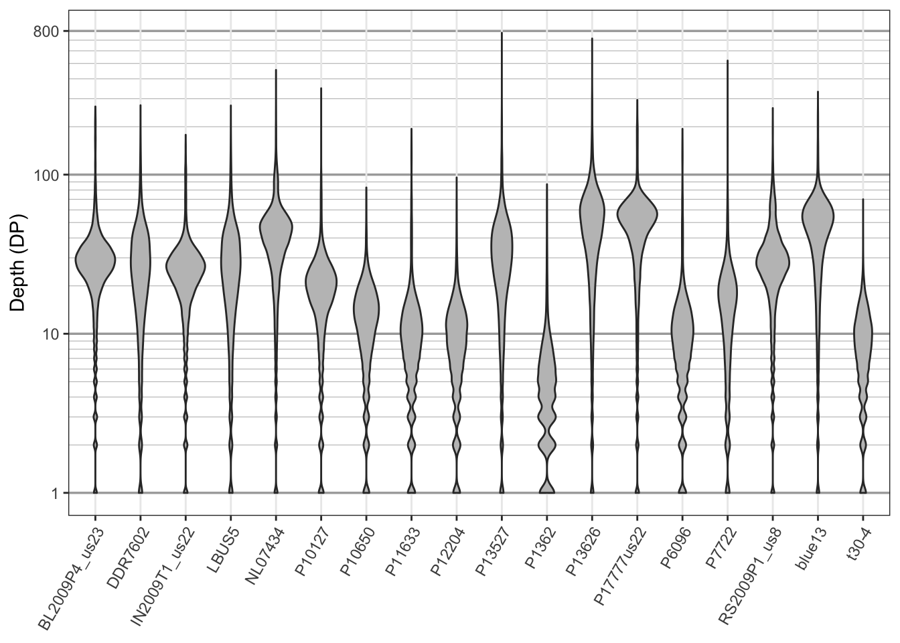
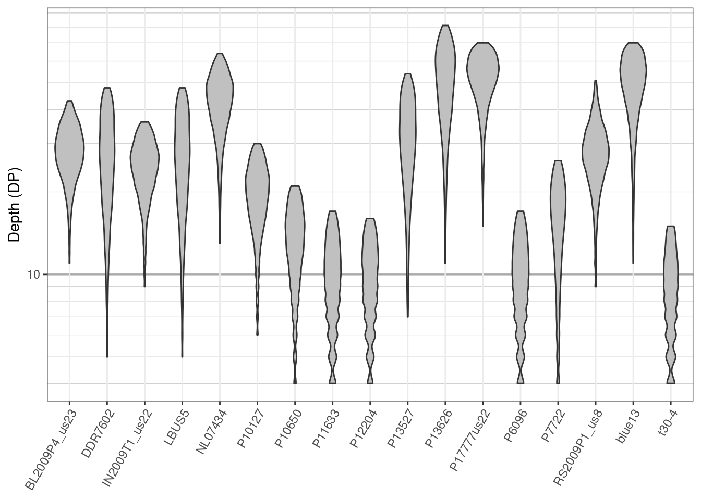

An important issue to consider once you have your file of genotypes is that not all samples and variants are of the same quality. Some samples may not have been sequenced at a high coverage and may need to be considered failed samples or samples that require additional sequencing. Some variants may not have been sequenced at a sufficient depth and may need to be considered low quality. Some variants may be located in repetitive elements and result in unusually high coverage and may include more than two alleles (when working with a diploid organism). Most variant callers claim to “aggressively” call variants with the intention that they will see a quality control step. In this section we explore our data and develop strategies for quality control.
One nice feature of CRAN and R is that it allows use to include data as packages. However, because it is part of a package it needs to be in a child directory of the package. Here we’ll use system.file() to help us find the file and then read it in. In your workflows you’ll typically know where your file is so you can simply use the file name.
library(vcfR)
library(pinfsc50)
myVcf <- system.file("extdata", "pinf_sc50.vcf.gz", package = "pinfsc50")
vcf <- vcfR::read.vcfR(myVcf, verbose = FALSE)library(vcfR)
library(pinfsc50)
myVcf <- system.file("extdata", "pinf_sc50.vcf.gz", package = "pinfsc50")
vcf <- vcfR::read.vcfR(myVcf, verbose = FALSE)If you set verbose to TRUE you will receive information on progress.
The first step of examining the data should include verifying that you successfully read it in. We can use the show method to get a summary of the data.
## ***** Object of Class vcfR *****
## 18 samples
## 1 CHROMs
## 22,031 variants
## Object size: 22.4 Mb
## 7.929 percent missing data
## ***** ***** *****
You should know the number of samples in your project and this should match the number reported by show. It is usually good to try to validate the number of variants read in matches the number in your file. We can accomplish this with the function count.fields().
## [1] 22031
This number should match the number reported by show(). If they do match, and the number of samples is correct, then we have validated that we have the correct number of rows and columns and can proceed.
Bonus question: why does this only count variants and not meta lines?
Different VCF files created by different variant callers, or the same variant caller parameterized differently, may produce VCF files with different information in them. To get a first peak at what data we have we can use the queryMETA() function.
## [1] "FILTER=ID=LowQual" "FORMAT=ID=AD" "FORMAT=ID=DP" "FORMAT=ID=GQ" "FORMAT=ID=GT"
## [6] "FORMAT=ID=PL" "GATKCommandLine=ID=HaplotypeCaller" "INFO=ID=AC" "INFO=ID=AF" "INFO=ID=AN"
## [11] "INFO=ID=BaseQRankSum" "INFO=ID=ClippingRankSum" "INFO=ID=DP" "INFO=ID=DS" "INFO=ID=FS"
## [16] "INFO=ID=HaplotypeScore" "INFO=ID=InbreedingCoeff" "INFO=ID=MLEAC" "INFO=ID=MLEAF" "INFO=ID=MQ"
## [21] "INFO=ID=MQ0" "INFO=ID=MQRankSum" "INFO=ID=QD" "INFO=ID=ReadPosRankSum" "INFO=ID=SOR"
## [26] "1 contig=<IDs omitted from queryMETA"
The meta section is a place where acronyms are defined that are used elsewhere in the file. If we tell the function what element to choose we get more information.
## [[1]]
## [1] "FORMAT=ID=DP" "Number=1"
## [3] "Type=Integer" "Description=Approximate read depth (reads with MQ=255 or with bad mates are filtered)"
##
## [[2]]
## [1] "INFO=ID=DP" "Number=1"
## [3] "Type=Integer" "Description=Approximate read depth; some reads may have been filtered"
The DP acronym occurs in the INFO column (column eight) as well as in the FORMAT column (column nine) so it is defined twice.
The genotypes are in a tabular format. The genotypes are typically accompanied with colon delimited data. Note that according to the VCF specification each row can have a different format, so each row needs to be processed separately.
## FORMAT BL2009P4_us23 DDR7602 IN2009T1_us22 LBUS5 NL07434
## [1,] "GT:AD:DP:GQ:PL" "1|1:0,7:7:21:283,21,0" "1|1:0,6:6:18:243,18,0" "1|1:0,8:8:24:324,24,0" "1|1:0,6:6:18:243,18,0" "1|1:0,12:12:36:486,36,0"
## [2,] "GT:AD:DP:GQ:PL" "0|0:12,0:12:36:0,36,427" "0|0:20,0:20:60:0,60,819" "0|0:16,0:16:48:0,48,650" "0|0:20,0:20:60:0,60,819" "0|0:28,0:28:84:0,84,948"
## [3,] "GT:AD:DP:GQ:PL" "0|0:27,0:27:81:0,81,1117" "0|0:26,0:26:78:0,78,1077" "0|0:23,0:23:69:0,69,946" "0|0:26,0:26:78:0,78,1077" "0|1:19,20:39:99:565,0,559"
## [4,] "GT:AD:DP:GQ:PL" "0|0:29,0:29:87:0,87,1243" "0|0:27,0:27:81:0,81,1158" "0|0:32,0:32:96:0,96,1299" "0|0:27,0:27:81:0,81,1158" "0|1:19,19:38:99:523,0,535"
## [1] "matrix"
## [1] 22031 18
We have now taken our VCF data, a format that most R functions can not work with, and converted part of it into a matrix, a common data structure that many R functions can work with. One way to visualize this data is with violin plots. Here we’ll use ggplot2 to create violin plots of depth.
library(ggplot2)
library(reshape2)
dpf <- melt(dp, varnames = c("Index", "Sample"),
value.name = "Depth", na.rm = TRUE)
dpf <- dpf[ dpf$Depth > 0, ]
p <- ggplot(dpf, aes(x = Sample, y = Depth))
p <- p + geom_violin(fill = "#C0C0C0", adjust = 1.0,
scale = "count", trim = TRUE)
p <- p + theme_bw()
p <- p + theme(axis.title.x = element_blank(),
axis.text.x = element_text(angle = 60, hjust = 1))
p <- p + scale_y_continuous(trans = scales::log2_trans(),
breaks = c(1, 10, 100, 800),
minor_breaks = c(1:10, 2:10 * 10, 2:8 * 100))
p <- p + theme(panel.grid.major.y = element_line(color = "#A9A9A9", size = 0.6))
p <- p + theme(panel.grid.minor.y = element_line(color = "#C0C0C0", size = 0.2))
p <- p + ylab("Depth (DP)")
p
We see that the data are generally unimodal which is what we would expect from genomic data. The bulging at the bottom of the plot is because we have integer data (i.e., we have information for 1 and 2 but no fractional values in between). At least one sample, P1362, looks questionable in quality. While most samples were sequenced at around 20X, all samples also include long tails well into the hundreds of times sequenced. You might consider this undesirable. You may also consider low coverage variants questionable as well We can manage this by omitting them. Here we’ll the 10th and 90th percentile to identify variants of unusual depth. First we’ll omit them by marking them as missing data (NA). Then we’ll omit samples and variants with an unusually high amount of missing data.
quants <- apply(dp, MARGIN = 2, quantile, probs = c(0.1, 0.9), na.rm = TRUE)
dp2 <- sweep(dp, MARGIN = 2, FUN = "-", quants[1, ])
dp[dp2 < 0] <- NA
dp2 <- sweep(dp, MARGIN = 2, FUN = "-", quants[2, ])
dp[dp2 > 0] <- NA
dp[dp < 4] <- NA
# Update the vcfR object with our changes.
vcf@gt[, -1][ is.na(dp) == TRUE ] <- NA
vcf## ***** Object of Class vcfR *****
## 18 samples
## 1 CHROMs
## 22,031 variants
## Object size: 20.5 Mb
## 27.7 percent missing data
## ***** ***** *****
Now we’ll omit samples that are over 55% missing data.
dp <- extract.gt(vcf, element = "DP", as.numeric = TRUE)
myMiss <- apply(dp, MARGIN = 2, function(x){sum( is.na(x))})
myMiss <- myMiss / nrow(dp)
vcf@gt <- vcf@gt[, c(TRUE, myMiss < 0.55)]
vcf## ***** Object of Class vcfR *****
## 17 samples
## 1 CHROMs
## 22,031 variants
## Object size: 20.2 Mb
## 26.1 percent missing data
## ***** ***** *****
Now we’ll omit variants that are more than 20% missing data.
myMiss <- apply(dp, MARGIN = 1, function(x){sum(is.na(x))})
myMiss <- myMiss / ncol(dp)
vcf <- vcf[myMiss < 0.2, ]
vcf## ***** Object of Class vcfR *****
## 17 samples
## 1 CHROMs
## 11,715 variants
## Object size: 12.3 Mb
## 6.714 percent missing data
## ***** ***** *****
Once we’ve processed the data its good to visualize how those decisions have affected the data. We’ll make another set of violin plots and compare them to the ones we made previously.
dp <- extract.gt(vcf, element = "DP", as.numeric = TRUE)
dpf <- melt(dp, varnames = c("Index", "Sample"),
value.name = "Depth", na.rm = TRUE)
dpf <- dpf[ dpf$Depth > 0, ]
p <- ggplot(dpf, aes(x = Sample, y = Depth))
p <- p + geom_violin(fill = "#C0C0C0", adjust = 1.0,
scale = "count", trim = TRUE)
p <- p + theme_bw()
p <- p + theme(axis.title.x = element_blank(),
axis.text.x = element_text(angle = 60, hjust = 1))
p <- p + scale_y_continuous(trans = scales::log2_trans(),
breaks = c(1, 10, 100, 800),
minor_breaks = c(1:10, 2:10 * 10, 2:8 * 100))
p <- p + theme( panel.grid.major.y = element_line(color = "#A9A9A9",
size = 0.6) )
p <- p + theme( panel.grid.minor.y = element_line(color = "#C0C0C0",
size = 0.2) )
p <- p + ylab("Depth (DP)")
p
We see that the sample P1362 has been removed from the data set, no variants over 100X occur and a minimum coverage of 4X has been used to define reasonable coverage. An important point to make here is that we’re not advocating for anyone to use the same thresholds that we’ve used here. Instead, our goal is to provide you with tools so that you can make the changes you think are appropriate and so that you can visualize the effects of those changes.
1) The VCF specification allows the FORMAT for each variant to be different. How can we learn how many different FORMATs are in our data?
2) Our data includes GQ. How can we find out what this means?
3) How can we extract the GQ information.
4) How can we visualize the GQ data?
5) For the sequence depth data we omitted values that were equal to zero but we have not here. Why was this step necessary for the depth data but not the genotype quality?